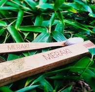
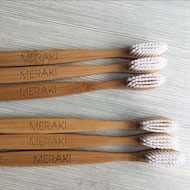

Conocenos
Misión
Somos una compañía que fabrica, importa y comercializa productos creados con materiales o procesos que contribuyan al medio ambiente. Buscamos la disminución de materiales dañinos para el medio ambiente en la vida cotidiana, reemplazándolos por materiales biodegradables y/o ecológicos.
Visión
Poner a disposición de la sociedad todos los productos necesarios para satisfacer sus necesidades, ofreciendo productos creados con materiales o procesos que aporten al medio ambiente.
Valores
Primero el planeta, conciencia ecológica,trabajo en equipo y decisiones a largo plazo
¿Es lo mismo un material biodegradable que uno ecológico?
Un material biodegradable significa que puede ser descompuesto o desintegrado en poco tiempo por organismos vivientes, y ser reintroducido dentro de los ciclos de los nutrientes en la naturaleza.
Por su parte, los materiales ecológicos son aquellos que, debido a su diseño, composición de sus materias primas, modo de empleo, vida útil y demás características, tienen un impacto menos negativo (o neutro) sobre el medio ambiente y pueden ser, una vez desechados y reinsertados en la naturaleza.
El menor impacto sobre el medio ambiente se ve reflejado en una disminución de la huella de carbono de los productos, una vida útil más prolongada, y la utilización de materiales biodegradables que no son acumulables, como por ejemplo, el bambú.
¿Es bueno el bambú para el medioambiente?
Sí, pero ¿por qué?
Tiene muy rápido crecimiento (secuestrando en el proceso grandes cantidades de CO2, gas de efecto invernadero),
Contiene agentes antibacterianos de origen natural , por lo cual no necesita fertilizantes ni pesticidas para crecer.
Es una de las plantas con mayor tasa de crecimiento y rebrota de raíz, por lo que en tan solo dos años alcanza su tamaño adulto, posibilitando nuevamente su cosecha.